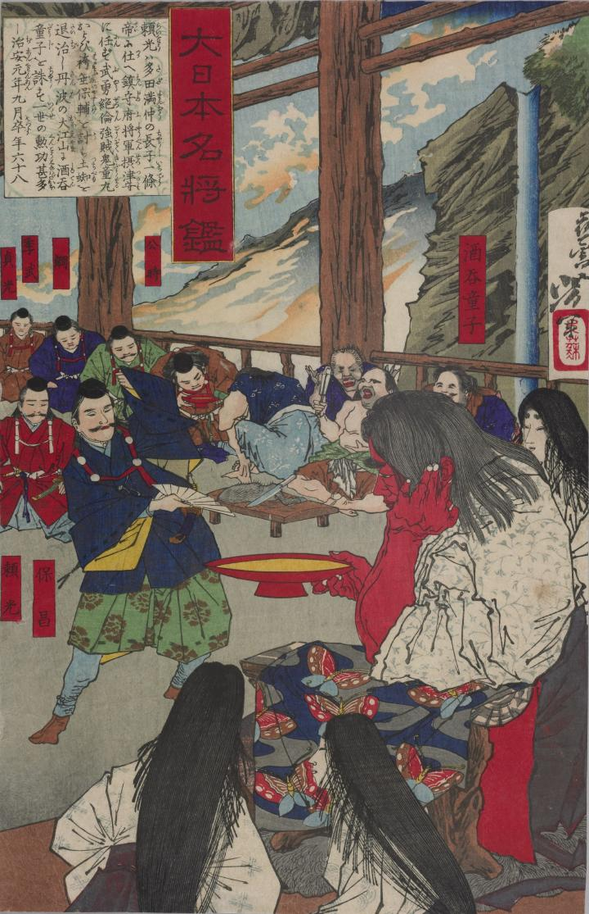

酒を飲む酒呑童子。肌は赤く、木製の椅子に座っている。
著作者：月岡芳年／出典：親書誌：U426_nichibunken_0089：大日本名将鑑；ダイニホンメイショウカガミ／日付：2006／資源識別子：U426_nichibunken_0089_0001_0000
Copyright (c)2010- International Research Center for Japanese Studies, Kyoto, Japan. All rights reserved.